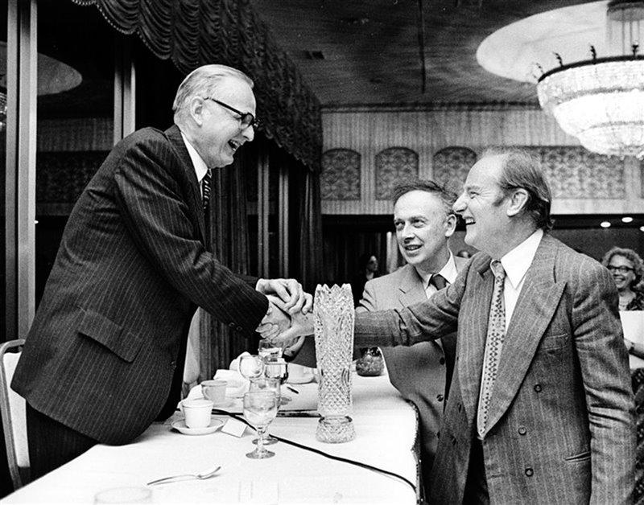

Rosalind Franklin
La scienziata che ha contribuito alla scoperta del DNA
Rosalind Franklin è stata una chimica e cristallografa fondamentale per la scoperta della struttura del DNA.
Il suo lavoro ha fornito dati essenziali per il modello della doppia elica.
Curiosità
- Morì nel 1958 a soli 37 anni a causa di un tumore alle ovaie probabilmente legato ai raggi X.
- Non vide il Premio Nobel assegnato a Watson, Crick e Wilkins.
- I suoi dati furono fondamentali per la struttura del DNA.
- Il suo ruolo è ancora oggi oggetto di dibattito scientifico.
- Anne Sayre pubblicò la prima biografia su di lei nel 1975.
- Watson la descrisse negativamente ne *La doppia elica*.
- Brenda Maddox ne rivalutò la figura nel 2002.
- Oggi è riconosciuta come figura chiave della biologia molecolare.

Eredità scientifica
Rosalind Franklin è oggi considerata una delle scienziate più importanti del XX secolo.
Il suo contributo ha cambiato la biologia moderna e rappresenta un simbolo di rigore scientifico e riconoscimento mancato.
Ricevi aggiornamenti